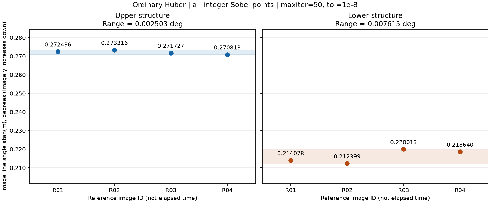
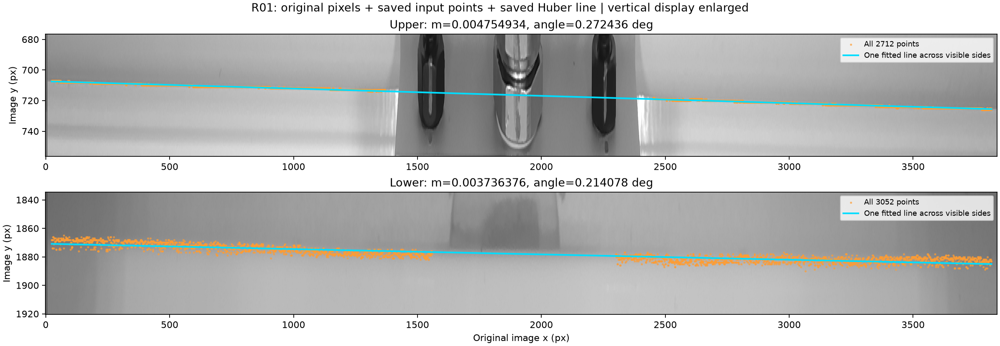
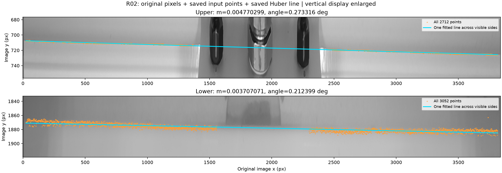
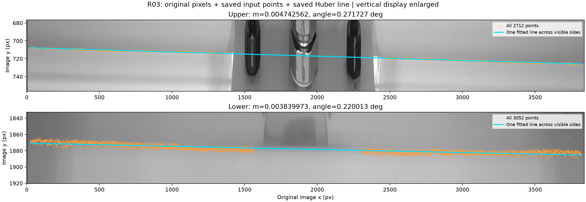
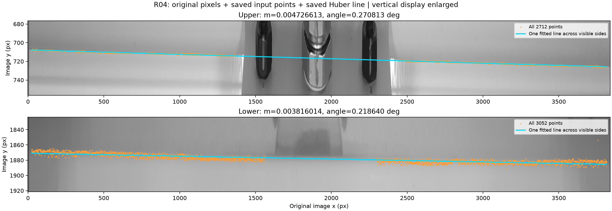

외부 상·하단 구조물의 기준 이미지 간 기울기 비교
상단 각도 최댓값−최솟값: 0.002503°
하단 각도 최댓값−최솟값: 0.007615° — 상단의 약 3.04배
대상: 1차 기준 영상 1장과 2차 기준 영상 3장, 이미지마다 상단·하단 각각 한 직선입니다. 상단끼리 4개, 하단끼리 4개를 비교했습니다. 상단과 하단을 하나의 값으로 평균내지 않았습니다.
1. 확정 설정과 사용한 입력
저장된 Sobel 정수 경계점 → 일반 Huber 세로 잔차 피팅 → 직선 y=mx+b. Huber t=1.345, s=MAD(center=0), s 갱신, 최대 50회, 종료값 10⁻⁸, 종료 기준 dev를 적용한 기존 A 결과를 사용했습니다. 이 설정의 수렴성 검증은 기존 보고서에 있습니다.
Gaussian, 추가 점 제거, 최소 점 개수 제한을 적용하지 않았습니다. 상단 2,712점·하단 3,052점을 이미지별로 모두 사용했습니다. 가려진 중앙 부분의 제외는 기존 입력과 동일하며, 좌우 가시 영역의 점을 모아 구조물당 한 직선을 계산한 결과입니다.
이번에는 이미 계산된 8개 직선의 계수를 재사용해 범위를 산출했습니다. 원본 이미지와 입력 캐시의 해시를 확인했습니다.
2. 이미지별 기울기와 각도
m은 px/px, 각도는 φ=atan(m)×180/π입니다. 영상 좌표의 y가 아래로 증가하므로 양수 기울기는 오른쪽으로 갈수록 아래로 내려감을 뜻합니다. 표의 각도는 영상 직선 각도이며 기계 θ값이 아닙니다.
| 기준 이미지 | 상단 m (px/px) | 상단 φ | 하단 m (px/px) | 하단 φ |
|---|---|---|---|---|
| 1차 center.bmp | 0.004754934 | 0.272436° | 0.003736376 | 0.214078° |
| 2차 center1.bmp | 0.004770299 | 0.273316° | 0.003707071 | 0.212399° |
| 2차 center2.bmp | 0.004742562 | 0.271727° | 0.003839973 | 0.220013° |
| 2차 center3.bmp | 0.004726613 | 0.270813° | 0.003816014 | 0.218640° |
3. 4장 사이 최댓값−최솟값
| 대상 | m 범위 | φ 범위 | 최솟값 이미지 | 최댓값 이미지 |
|---|---|---|---|---|
| 상단 | 0.000043686 | 0.002503° | 2차 center3.bmp | 2차 center1.bmp |
| 하단 | 0.000132902 | 0.007615° | 2차 center1.bmp | 2차 center2.bmp |
현재 4장에서 상단이 하단보다 더 균일하게 측정됐습니다. 별도의 통과 기준이나 동등성 검정은 적용하지 않았습니다. 기계 θ 허용오차 ±0.005°를 영상 선 각도에 직접 대입하지 않았습니다.

두 패널은 동일한 각도 축을 사용합니다. 색 영역은 관측된 최솟값부터 최댓값이며 신뢰구간이 아닙니다. R01~R04는 기준 이미지 ID입니다.
4. 원본에서 사용한 점과 직선 확인
주황 점: 입력 경계점 전체. 하늘색: 구조물 전체에 맞춘 단일 직선. 작은 기울기를 보기 위해 세로 방향을 확대했으므로 화면에 보이는 경사를 실제 각도로 읽으면 안 됩니다. 가려진 중앙 구간의 하늘색 선은 직선의 연장이며 그 구간에 측정점이 있다는 뜻은 아닙니다.
1차 center.bmp

2차 center1.bmp

2차 center2.bmp

2차 center3.bmp

5. 근거 파일
원본 이미지 경로
- R01:
C:\Users\SSAFY\Desktop\[기업연계_세메스] 교보재\[기업연계_세메스] 교보재\SSAFY Test Image Set\center.bmp - R02:
C:\Users\SSAFY\Desktop\LSJ_Private\자율PJT\analysis\second_data_inspection\extracted\일부 데이터 추출\기준 위치\center1.bmp - R03:
C:\Users\SSAFY\Desktop\LSJ_Private\자율PJT\analysis\second_data_inspection\extracted\일부 데이터 추출\기준 위치\center2.bmp - R04:
C:\Users\SSAFY\Desktop\LSJ_Private\자율PJT\analysis\second_data_inspection\extracted\일부 데이터 추출\기준 위치\center3.bmp